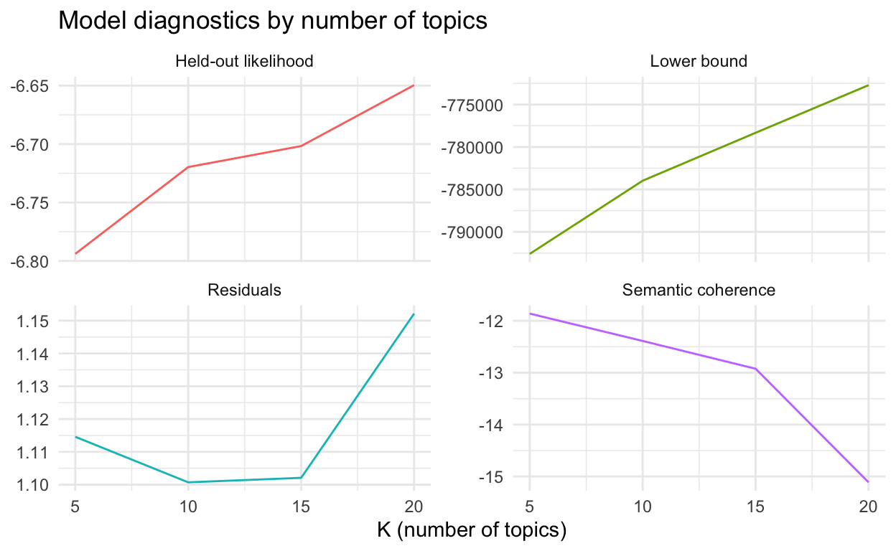
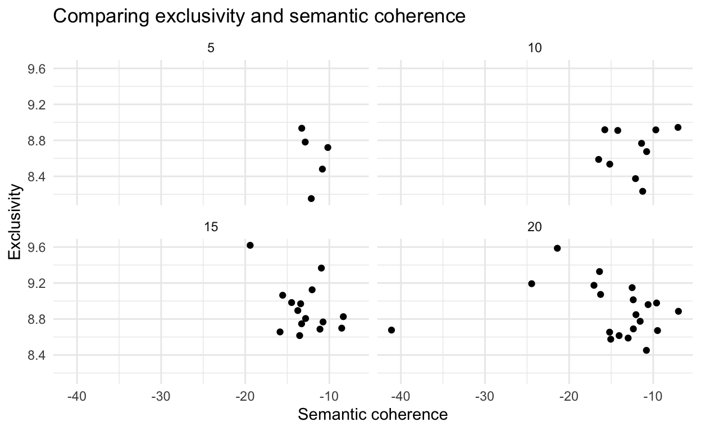

Text modelling is an exciting area of research. But many guides assume that you already have a nice dataset. Similarly, web scraping is an exciting way to get information, but not many explanations go on to explain what you could do with it. This post attempts to go from scraping text from a website through to modelling the topics. It’s not meant to be an exhaustive post, but should hopefully provide enough that you can get started with your own project and know where to go for more information.
Text modelling is an exciting area of research. But many guides assume that you already have a nice dataset. Similarly, web scraping is an exciting way to get information, but not many explanations go on to explain what you could do with it. This post attempts to go from scraping text from a website through to modelling the topics. It’s not meant to be an exhaustive post, but should hopefully provide enough that you can get started with your own project and know where to go for more information.
The example that I’m going to use is getting data from the minutes of the RBA board meeting.
The first step is to get some data. I’m going to use the rvest package to do the web scraping. When you are scraping data you should try to be polite - slow down your requests as much as possible, avoid times you know they’ll have a lot of traffic, and check if the website has an API or a robots.txt file (usually access that at domain.com/robots.txt) that provides guidance.
# install.packages("rvest")
library(rvest)
# install.packages("tidyverse")
library(tidyverse)
# Read in the list of the website addresses
data_to_scrape <- read_csv("inputs/addresses.csv") # Just a list of the URLs
# and dates for each minutes.
address_to_visit <- data_to_scrape$address
save_name <- data_to_scrape$save_name
# Create the function that will visit address_to_visit and save to save_name files
visit_address_and_save_content <-
function(name_of_address_to_visit,
name_of_file_to_save_as) {
# The function takes two inputs
read_html(name_of_address_to_visit) %>% # Go to the website and read the html
html_node("#content") %>% # Find the content part
html_text() %>% # Extract the text of the content part
write_lines(name_of_file_to_save_as) # Save as a text file
print(paste("Done with", name_of_address_to_visit, "at", Sys.time()))
# Helpful so that you know progress when running it on all the records
Sys.sleep(sample(30:60, 1)) # Space out each request by somewhere between
# 30 and 60 seconds each so that we don't overwhelm their server
}
# If there is an error then ignore it and move to the next one
visit_address_and_save_content <-
safely(visit_address_and_save_content)
# Walk through the addresses and apply the function to each
walk2(address_to_visit,
save_name,
~ visit_address_and_save_content(.x, .y)) The CSV with the addresses and save names that we use looks something like this:
| address | save_name |
|---|---|
| https://www.rba.gov.au/monetary-policy/rba-board-minutes/2018/2018-11-06.html | inputs/minutes/2018-11-06.txt |
| https://www.rba.gov.au/monetary-policy/rba-board-minutes/2018/2018-10-02.html | inputs/minutes/2018-10-02.txt |
| https://www.rba.gov.au/monetary-policy/rba-board-minutes/2018/2018-09-04.html | inputs/minutes/2018-09-04.txt |
| https://www.rba.gov.au/monetary-policy/rba-board-minutes/2018/2018-08-07.html | inputs/minutes/2018-08-07.txt |
| https://www.rba.gov.au/monetary-policy/rba-board-minutes/2018/2018-07-03.html | inputs/minutes/2018-07-03.txt |
In this example we’ll use a whole bunch of packages so that you can see what’s available. In general probably stringr, quanteda and stm are the workhorse packages with others used as needed.
#### Workspace set-up ####
# install.packages("broom")
library(broom) # Used to clean up results
# install.packages("devtools")
library(devtools)
# devtools::install_github("DavisVaughan/furrr")
library(furrr) # Used to do parallel processing with the topic models
plan(multiprocess)
# install.packages("quanteda")
library(quanteda) # Used for data cleaning
# install.packages("readtext")
library(readtext) # Used to read in the txt files that were scraped
# install.packages("stm")
library(stm) # Used for more interesting topic models
# install.packages("tictoc")
library(tictoc) # Used for timing
# install.packages("tidytext")
library(tidytext)
# install.packages("tidyverse")
library(tidyverse) # Used for everything
# install.packages('topicmodels')
library(topicmodels) # Used to make basic topic models
# Read in the text that we scraped earlier
text <- readtext::readtext("inputs/minutes/*.txt") # readtext makes this easy,
# but could also use the usual base approach of listing files that end in txt etc.In general you’ll often need to do a lot of cleaning before you can do the stats bit and get results. Here, I’ll just show two example steps. I’ve found that cleaning the dataset seems to take about 80 per cent of the time.
#### Clean data ####
# Do some basic cleaning - remove puncuation and change everything to lower case
text$text <- str_to_lower(text$text)
text$text <- str_replace_all(text$text, "[:punct:]", " ")Now that we have a plausibly clean dataset (of course you’d want to come back and clean it more if you were actually interested in analysing the RBA minutes), we can try a topic model. Topic models are essentially just summaries. Instead of a document becoming a collection of words, they become a collection of topics with some probability associated with each topic.
#### First topic modelling ####
# Convert the corpus to a form that the topic model can work with
rba_minutes <- quanteda::corpus(text) %>% # Minimum viable conversion
quanteda::dfm(remove_punct = TRUE, remove = stopwords('en')) %>% # Get rid of
# punctuation (in case you didn't already do that) and stop words - check
# those stop words assumptions
quanteda::dfm_trim(min_termfreq = 2, # Remove any word that doesn't occur at
# least twice
min_docfreq = 2) # Get rid of any word that isn't in at least two documents
# Run the topic model with 10 topics
dtm <- quanteda::convert(rba_minutes, to = "topicmodels") # Getting the dfm
# into a form that topicmodels can deal with
lda_topics <- topicmodels::LDA(dtm, k = 10) # The k is the number of topics -
# this decision has a big impact
# Have a look at the terms
terms(lda_topics, 10) # Top 10 words for each topic. Topics are just
# probability distributions over words so you should look at different numbers of wordsLooking at the words in the topics, it seems as though “per” and “cent” are being treated as separate words. The RBA is proud that it separates “per” and “cent”, and if you’re a grad there that’ll stick with you for a while (see earlier paragraphs), but for our purposes they are one word and we need to combine them.
#### Clean data ####
# Let's deal with the first issue first.
text$text <- stringr::str_replace_all(text$text, "per cent", "per_cent")
text$text <- stringr::str_replace_all(text$text, "per cent", "per_cent")
# You could run the topic model again if you wanted.Right, that issue of per cent has been fixed, but what if there are combinations of words like this that don’t show up very high in the topics? To identify these we need to construct n-grams. Earlier with ‘per’ ‘cent’, we generated a 2-gram. Quanteda and the tidyverse makes it easy to identify popular n-grams (if your dataset is large then I’d work with a sample of it because these can get a little unwieldy, and we only really care about the popular ones anyway). Our text is in sentences, paragraphs, etc, and we first need to break it down into tokens (essentially separate words). There’s a wonderful set of tutorials put together by the quanteda team here: https://tutorials.quanteda.io and the code for this section is from: https://tutorials.quanteda.io/basic-operations/tokens/tokens_ngrams/.
#### Adjusting for common co-location ####
toks <- tokens(text$text)
# First generate 2-grams
ngrams <- tokens_ngrams(toks, n = 2:4)
# Somewhat annoyingly for our purposes (although understandably given the broader
# picture) quanteda puts tokens into its own class, so we need ot convert in
# order to use the usual tidyverse tools that we may be more familiar with.
# As a side note, I often find it worthwhile to checking class in R when there's
# an issue because often that's part of the issue, in this case: class(ngrams).
# The tokens class seems to just be a list, so we can unlist it and then put it
# into a more-friendly tibble.
ngram_counts <- tibble(ngrams = unlist(ngrams)) %>%
count(ngrams, sort = TRUE)
# We can identify a bunch of obvious replacements. If we start getting a long
# list then we can create a file that holds the replacement.
text$text <- stringr::str_replace_all(text$text, "assistant governor", "assistant_governor")
text$text <- stringr::str_replace_all(text$text, "reserve bank board", "reserve_bank_board")
text$text <- stringr::str_replace_all(text$text, "unemployment rate", "unemployment_rate")
text$text <- stringr::str_replace_all(text$text, "national accounts", "national_accounts")
text$text <- stringr::str_replace_all(text$text, "australian dollar", "australian_dollar")
text$text <- stringr::str_replace_all(text$text, "monetary policy", "monetary_policy")
text$text <- stringr::str_replace_all(text$text, "united states", "united_states")
text$text <- stringr::str_replace_all(text$text, "exchange rate", "exchange_rate")
text$text <- stringr::str_replace_all(text$text, "glenn stevens", "glenn_stevens")
text$text <- stringr::str_replace_all(text$text, "reserve bank", "reserve_bank")
text$text <- stringr::str_replace_all(text$text, "cash rate", "cash_rate")
text$text <- stringr::str_replace_all(text$text, "us dollar", "us_dollar")
text$text <- stringr::str_replace_all(text$text, "iron ore", "iron_ore")
rm(toks, ngrams, ngram_counts)Take a look at the topics again. Notice that ‘growth’ is in essentially every topic. So is ‘members’ and a couple of others. It’s not that growth isn’t important (insert standard economist joke here), but the fact that ‘members’ shows up suggests that these may just be due to the way that language is used at the RBA, rather than communicating topics. If you read these minutes, you’ll know that the RBA starts a LOT of sentences with ‘Members noted…’. What does this mean for our purposes? Essentially, if you look at each topic by itself they seem ‘coherent’, but taken as a group it seems as though the topics are too similar. Another way to say that is that the words lack ‘exclusivity’. This is a common tradeoff, and our results suggest that it may be worthwhile for us to reduce some of the coherence in order to increase the exclusivity. At this point, we’ll use a different package for creating topic models - the STM package - because it has a bunch of nice features that you might like to take advantage of in future work.
#### Introducing STM and quanteda ####
rba_minutes <- quanteda::corpus(text) %>% # Minimum viable conversion
quanteda::dfm(remove_punct = TRUE,
remove_numbers = TRUE,
remove = stopwords('en')) %>% # Get rid of punctuation (in
# case you didn't already do that) and stop words - check those stop words assumptions
quanteda::dfm_trim(min_termfreq = 2, # Remove any word that doesn't occur at least twice
min_docfreq = 0.05, # Get rid of any word that isn't in at
# least 5 per cent of documents
max_docfreq = 0.90, # Get rid of any word that is in at
# least 90 per cent of documents
docfreq_type = "prop" # Above we specified percentages - you
# could specify counts or ranks
)
# We can run the topic model using STM
topics_stm <- stm(rba_minutes, K = 10)
# Looking at the results you can see that the results are fairly similar to
# those that we got from the topicmodels package, which is what we want.
labelTopics(topics_stm)
rm(topics_stm)
# If we were interested in the results then we might like to pre-process the text
# a little more, for instance removing the names of months.Other than pre-processing decisions, the other major determininat of the outputs of topic models is the number of topics specified. There are a bunch of diagnostic tests that have been developed to help with this decision and we can use some nice code from Julia Silge (https://juliasilge.com/blog/evaluating-stm/) to try a bunch of different values for the number of topics.
#### Deciding on the number of topics ####
tic("With parallel") # This allows us to time the code
many_models <- data_frame(K = seq(5, 20, by = 5)) %>% # Here we're running four
# topic models: 5 topics, 10 topics, 15 topics and 20 topics
mutate(topic_model = future_map(K, ~stm(rba_minutes,
K = .,
verbose = FALSE)))
toc()
# You can also try setting K to zero within STM and seeing the number of topics
# that it recommends: e,g, choose_topic_num_for_me <- stm(rba_minutes, K = 0, verbose = FALSE)
# We want to compare those models with different numbers of topics using various diagnostics.
heldout <- make.heldout(rba_minutes) # First create a test/training set
k_result <- many_models %>%
mutate(exclusivity = map(topic_model, exclusivity), # How unique are words to the topics
semantic_coherence = map(topic_model, semanticCoherence, rba_minutes), # How
# much the topics tend to be coherent if we look at them (usually a
# tradeoff with exclusivity)
eval_heldout = map(topic_model, eval.heldout, heldout$missing),
residual = map(topic_model, checkResiduals, rba_minutes),
bound = map_dbl(topic_model, function(x) max(x$convergence$bound)),
lfact = map_dbl(topic_model, function(x) lfactorial(x$settings$dim$K)),
lbound = bound + lfact,
iterations = map_dbl(topic_model, function(x) length(x$convergence$bound)))Put these diagnostics into a nice summary graph (again code is Julia’s originally).
k_result %>%
transmute(K,
`Lower bound` = lbound,
Residuals = map_dbl(residual, "dispersion"),
`Semantic coherence` = map_dbl(semantic_coherence, mean),
`Held-out likelihood` = map_dbl(eval_heldout, "expected.heldout")) %>%
gather(Metric, Value, -K) %>%
ggplot(aes(K, Value, color = Metric)) +
geom_line(show.legend = FALSE) +
facet_wrap(~Metric, scales = "free_y") +
labs(x = "K (number of topics)",
y = NULL,
title = "Model diagnostics by number of topics") +
theme_minimal()
In general we are looking for the max/min of parabolas, so our results suggest we may be best with some more topics (go to Julia’s post for to see another example: https://juliasilge.com/blog/evaluating-stm/.
# Have a look at that exclusivity to coherence tradeoff
k_result %>%
select(K, exclusivity, semantic_coherence) %>%
unnest() %>%
mutate(K = as.factor(K)) %>%
ggplot(aes(semantic_coherence, exclusivity)) +
geom_point() +
facet_wrap(vars(K)) +
labs(x = "Semantic coherence",
y = "Exclusivity",
title = "Comparing exclusivity and semantic coherence") +
theme_minimal()
Although you’d probably want more, let’s just choose 10 topics for now. What we’re most interested in is getting the betas and gammas so that we can do our usual analysis.
topic_model <- k_result %>%
filter(K == 10) %>%
pull(topic_model) %>%
.[[1]]
# Grab the betas - these are the probability of each term in each topic
td_beta <- broom::tidy(topic_model,
matrix = "beta")
# Grab the gammas - these are the probability of each word in each topic
td_gamma <- tidy(topic_model,
matrix = "gamma",
document_names = rownames(rba_minutes))From here you could look at how the gammas and betas evolve or change using a statistical model. Or even sometimes just looking at them is interesting. Julia Silge has a bunch of code that makes very nice graphs and tables. One of the advantages of the STM package is that it makes it easier to include specific types of additional information. For instance, we know that over our time period there have been two governors: GRS and Phil Lowe. We could associate each date with who the governor is and then allow that to affect the prevalence of certain topics.
You can grab the files and folder set up from GitHub if you’d like.